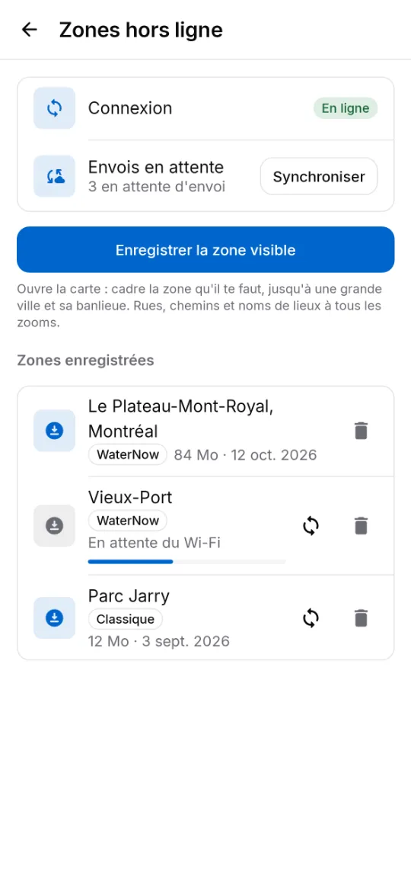

Québec · Québec, Canada
Trouve de l'eau et des toilettes gratuites à Québec
Vieux-Québec, plaines d'Abraham, Saint-Roch, Limoilou : où que tu ailles, WaterNow te montre les points d'eau et les toilettes gratuites autour de toi, et t'y guide.
Télécharger pour Android- Gratuit
- Sans pub
- Sans compte

Pourquoi WaterNow
Gratuit
La carte, la recherche, l'itinéraire et les cartes hors ligne sont gratuits, pour de bon.
Sans pub
Aucune publicité, nulle part dans l'app.
Sans compte
Le mode invité suffit pour parcourir la carte, obtenir un itinéraire et noter tes remplissages.
Hors ligne
Enregistre ta ville : la carte et ses points fonctionnent sans connexion.
Guidage pas à pas
À pied, à vélo ou en auto, avec une voix qui annonce chaque virage.
Accessible et chiens
Des filtres pour n'afficher que les points accessibles, ou ceux qui ont de l'eau pour ton chien.
7 langues
Français, anglais, espagnol, allemand, portugais, japonais et roumain.
Vie privée d'abord
Aucun traceur. Ta position sert à trouver l'eau autour de toi, et tu peux exporter ou supprimer tes données à tout moment.
Un aperçu de l'app


Comment ça marche
Télécharge l'app
Gratuite, pour Android, directement depuis ce site.
Ouvre-la, avec ou sans compte
Continue en invité ou crée un compte : c'est toi qui choisis.
Laisse-toi guider
Choisis un point d'eau ou des toilettes autour de toi, et suis le guidage.
Questions fréquentes
WaterNow est-il gratuit ?
Oui. La carte, la recherche, l'itinéraire et les cartes hors ligne sont gratuits, sans pub. Des extras facultatifs existent, mais tout ce qui est utile reste gratuit.
Faut-il créer un compte ?
Non. En invité, tu peux parcourir la carte, obtenir un itinéraire et noter tes remplissages. Un compte te permet en plus d'ajouter des points, des avis et des photos.
Est-ce que ça fonctionne hors ligne ?
Oui. Enregistre la zone qu'il te faut, jusqu'à une grande ville et sa banlieue : la carte et ses points fonctionnent ensuite sans connexion.
Sur quel téléphone ?
Sur Android. Le bouton télécharge l'app directement depuis ce site, et Android te demande d'autoriser son installation.
Une petite soif à Québec ?
Télécharge WaterNow et vois l'eau et les toilettes gratuites autour de toi.
Télécharger pour Android